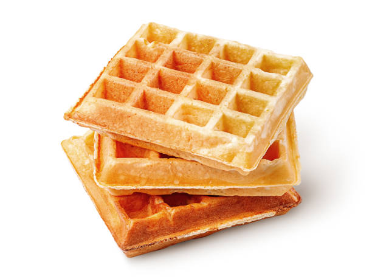

Waffles recipe

Description
Waffles are the most brilliant sweet food! Crunchy, milk waffles with sour cream.... Saliva is flowing from the mouth, tbh.
Today you'll learn how to reach the deepest feeling of your loved one. The solution is ready - waffles.
Ingredients
- 1 egg
- 225g self-raising flour
- 1 tbsp golden caster sugar (optional)
- 250ml milk
- 50g butter, melted and cooled
- ½ tsp vanilla extract (optional)
- 1 tbsp sunflower or vegetable oil
- maple syrup and icing sugar, to serve (optional)
Steps
- Crack the egg (for fluffier waffles, use only the yolk at this stage) into a large bowl, then tip in the flour and a generous pinch of salt. Add the sugar, if using, then gradually whisk in the milk followed by the melted butter until smooth. Whisk in the vanilla, if using. If you've chosen to make fluffier waffles, whisk the egg white to soft peaks, then gently fold this into the batter. Alternatively, make the batter by blitzing all the ingredients together using a blender or hand blender. Can be made 1-2 hrs ahead and chilled.
- Heat a waffle maker following the manufacturer's instructions, brush with a little of the oil, then ladle in enough batter to just cover the surface. Cook following the manufacturer's instructions (usually 5-6 mins) until the waffles are golden brown and crisp. Serve immediately or keep warm in a low oven while you make the rest. Drizzle with maple syrup or sprinkle with icing sugar, if you like.